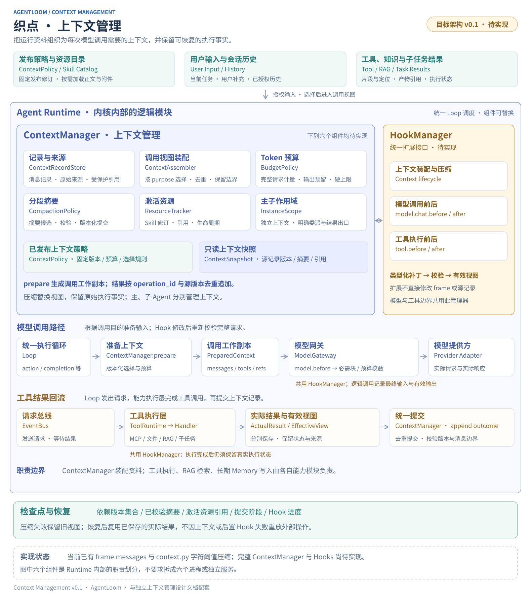

上下文管理设计
独立设计文档 · v0.1 · 2026-10-03 · 基于当前代码静态核对
ContextManager 决定每次模型调用看到什么，并保证这些信息在预算内、来源可追溯、主子任务相互隔离、运行中断后可恢复。它属于 Agent Runtime，与 Loop、HookManager、计划管理和检查点协作。
1. 职责边界
上下文管理负责
记录消息与来源；维护任务约束、摘要和激活资源的视图；按调用目的选择材料；计算预算；整组保留工具交互；生成调用输入；保存上下文版本与压缩进度。
协作模块负责
Loop 决定下一步；ModelGateway 调用模型；ToolRuntime 执行工具；Retriever 检索知识；PlanManager 管计划；CompletionPolicy 判断完成；MemoryService 管理长期记忆；CheckpointManager 协调恢复。
ContextManager 消费这些模块返回的类型化结果和状态快照。它不根据字符串猜测“这是不是 MCP、文件或知识工具”，不在组装 Prompt 时偷偷执行工具，也不把摘要中的一句话当成计划完成或工具成功。
| 对象 | 作用 | 权威来源 |
|---|---|---|
| 原始消息与来源记录 | 用户输入、模型返回、工具结果引用、加载资料与版本。 | ContextRecordStore 的追加记录；大内容放受控内容存储。 |
| 模型可见上下文 | 当前指令、任务、活跃约束、摘要、近期完整交互、相关资料。 | ContextManager 生成的 PreparedContext，可重新装配。 |
| 执行状态 | 调用真实状态、已执行副作用、计划进度、待处理工具、子任务终态。 | 操作记录、PlanManager、ChildTaskManager 与检查点；ContextManager 仅持有引用或视图。 |
| 长期记忆 | 跨运行使用的事实或偏好及其有效期。 | 未来的 MemoryService；不从摘要自动写入。 |
2. 模块架构

| 模块 | 职责 | 主要输出 |
|---|---|---|
| ContextManager | 统一入口，协调记录、装配、预算、压缩与版本提交；按实例串行写入。 | PreparedContext、ContextSnapshot、结构化错误。 |
| ContextRecordStore | 保存带来源的追加记录、幂等键和内容引用；提供按实例、序号和交互组回读接口。 | ContextRecord / MessageGroup。数据库及文件实现通过端口注入。 |
| ContextAssembler | 依据调用目的、权限、保留规则和状态快照选择上下文块，并生成标准消息。 | ContextBlock 列表、消息、来源映射与丢弃原因。 |
| BudgetPolicy | 对消息、工具定义、协议开销、输出预留统一计费；选择保留、外置或压缩策略。 | BudgetReport、超限位置与可执行的减量方案。 |
| CompactionPolicy | 选择已完成历史，分段生成摘要、校验覆盖范围，并以新修订提交；摘要模型通过 ModelGateway 调用。 | SummaryRevision、CompactionJob。不得递归启动无限压缩。 |
| ResourceTracker | 记录活跃 Skill、片段、文件、引用的版本、保留方式和重载入口；不负责资源导入或检索。 | ActivationSet、可回读的资源引用与失效状态。 |
| InstanceScope | 隔离空间、会话、运行和主子实例；验证委派背景与子任务结果的可见范围。 | ContextScope、显式 ContextTransfer。 |
HookPointRegistry 与 HookManager 仍由统一 Hooks 模块提供；ContextManager 只声明上下文挂点并调用接口。工具结果通过统一 ToolOutcome 契约接入，新增工具无需增加上下文管理分支。
3. 数据契约：记录、上下文块与调用快照
ContextRecord 是来源记录，ContextBlock 是可选择的视图单位，MessageGroup 是不可拆开的协议单位。三者分别解决追溯、预算和模型调用协议的问题。
ContextScope space_id / actor_id / session_id / run_id / instance_id agent_release / effective_grant_ref ContextRecord record_id / sequence / scope / event_key kind: user_input | assistant_message | tool_outcome | resource | child_result source: resource_id? / revision? / path? / line_range? / operation_id? content_ref / effective_view_ref? / content_hash authority / visibility / created_at ContextBlock block_id / source_record_ids / source_revision kind: instruction | task | state | summary | interaction | material retention: required | active | compressible | on_demand group_id? / token_estimate / activation_ref? / provenance PreparedContext prepared_id / scope / purpose / source_watermark / context_revision policy_revision / model_profile_revision / tool_catalog_revision messages / authorized_tools / block_source_map / protected_block_manifest dependency_versions / budget_report ContextSnapshot revision / source_watermark / summary_revision / active_resource_refs selected_group_ids / state_refs / dependency_versions policy_revision / pending_compaction_ref?
原始结果和 Hook 加工视图通过不同引用关联同一 operation_id。调用状态以实际操作记录为准，视图内容不得覆盖真实状态。ContextRecord 逻辑追加；到期删除、用户删除或访问撤回由存储策略处理，不因“可追溯”无限保留内容。
身份、可见范围、资源版本和消息类别由宿主生成并校验。模型产生的文本不能自行声明为系统指令，也不能伪造资源授权。资料中的指令即使被摘要或由子 Agent 转述，仍保留资料来源与权限级别。
工具消息的完整性
一条 assistant 消息中的全部 tool_calls，加上对应每个 call_id 的结果，组成一个 MessageGroup。模型输入必须保留完整关联；删除旧历史时整组替换为摘要。尚未完成的调用组先由 Runtime 恢复或核对，不能为了腾空间删掉一半，也不能伪造“工具已成功”的结果。用户补充在组闭合后加入下一次模型输入，保留原输入时间和顺序。
组内结果体可以使用结构化缩略视图，但要保留调用 ID、真实状态、截取说明和原文回读引用。禁止按任意字符位置截断 JSON 参数或协议字段。
4. 每次调用如何装配上下文
Loop 到达安全的模型调用边界 → 读取 ContextScope、发布策略、实例状态与源记录水位 → ContextAssembler 按 purpose 选取候选块 → context.prepare.before：受约束地增加资料或调整可选块 → 核验来源、作用域、消息组完整性 → BudgetPolicy：计数 → 外置大结果 / 精简可选材料 / 压缩已完成历史 → 重新装配与校验，生成 PreparedContext → context.prepare.after：只读观测装配结果 → ModelGateway 执行 model.chat.before → 最终必需块完整性、协议、权限、Token 与输出预留校验 → 保存本次实际输入的受保护引用，再调用模型 → 保存真实响应 → model.chat.after → 幂等追加有效模型消息 → Loop 判断回答或工具调用，继续下一轮
上下文选择需要可解释：每块记录为何被保留、摘要、外置或移除。相同源水位、策略和资源版本应生成稳定次序；后续优化可以改变选择策略，但必须版本化。
| 调用目的 | 主要输入 | 约束 |
|---|---|---|
| action | Agent 指令、当前目标与用户约束、当前计划视图、活跃 Skill、近期完整交互、历史摘要和相关资料。 | 使用实例已授权工具目录；主子实例各自装配。 |
| compaction | 固定摘要指令、被压缩的已完成记录、上一摘要、必要状态与来源 ID。 | 独立预算；无行动工具；不套用普通回答改写链。 |
| completion | 当前任务、权威计划状态、执行证据、候选回答与必要历史。 | 使用结构化检查契约；不能只凭历史摘要判断完成。 |
现有代码完成检查的 purpose 名为 verification；目标统一为 completion，接入时做显式迁移或映射，不能让现有过滤条件静默失效。Embedding 不使用对话上下文装配，继续遵守知识索引与 Hooks 设计中的独立契约。
5. Token 预算与超限策略
预算由实际模型配置决定，无需现在锁定某个模型版本。模型接入配置需明确上下文容量、输入上限（如有）、允许输出上限和计数方式；无法确认的能力标记为未知并要求配置，不凭模型名称猜测容量。
C = 已确认的上下文容量与平台限制中的较小值
R = 本次输出预留（遵循供应商对输出及推理预算的定义）
S = 计数误差与协议开销的安全余量
InputBudget = min(模型独立输入上限（如有）, C - R - S)
EstimatedInput = 指令 + 任务/状态 + Skill + 历史/摘要
+ 工具结果/检索材料 + 工具 Schema + 消息封装开销
发送条件：EstimatedInput ≤ InputBudget，且各供应商独立限制成立
优先使用对应模型的可靠计数能力；仅能估算时，BudgetReport 必须标注估算方式和余量。字符数可用作粗筛，不能直接当成 Token 数。供应商 usage 用于校准估算，不能代替发送前检查；不默认存在免费、精确的远程计数接口。
| 保留类别 | 示例 | 预算处理 |
|---|---|---|
| required | 发布指令、当前用户请求与有效约束、授权工具契约、必要状态、当前必须保持的交互组。 | 不能静默删除或改写；自身放不下则返回具体超限错误。 |
| active | 正在使用的 Skill 正文、当前工作文件片段、仍影响本任务的资料。 | 按显式生命周期保留；活跃约束不得仅以未校验摘要代替。 |
| compressible | 已完成的旧交互、旧检索结果、过往调试输出。 | 保留来源和重要事实，生成带覆盖范围的摘要。 |
| on_demand | 完整工具日志、长文件、Skill 参考附件、历史原文。 | 保留可回读引用与短视图；需要时通过授权工具按范围读取。 |
超限处理顺序：去除重复投影 → 将大结果外置为可回读内容 → 减少可选资料 → 压缩已完成历史 → 重算预算。这里的去重依据记录 ID、内容版本和用途，不能把用户重复提出的约束误删为普通重复文本。
所有缩略输出必须提供真实存在的内容引用、长度、可读取范围及读取方式。首期需补齐通用分页/分段读取能力，再把大结果外置作为闭环；只有“后面可继续读取”的提示不算实现。大结果的选段规则应先确定，不能要求模型先读入整个超限结果再决定如何缩短。
若发布 Prompt、活跃 Skill 或必要工具 Schema 本身超限，返回 ContextBudgetExceeded 和分项大小，由配置或明确的工具目录策略调整。不能自动扩大模型容量、改变模型绑定或悄悄丢掉必要规则。单次超长用户内容保留原文；可作为带引用资料分段处理，若不能保留有效请求和约束，则要求缩小范围。
最终 ModelGateway 校验复用同一 BudgetPolicy，并核对 PreparedContext 的 protected_block_manifest：必需块的身份、来源、原文哈希和权限级别不可删除、改写或降级。模型 Hook 只能修改白名单中的可选内容或附加授权材料；不能通过改 messages 绕过上下文阶段对发布指令、当前任务和有效用户约束的保护。附加内容保留 Hook 来源与宿主授予的类别。若 model.chat.before 增加内容导致超限，本次调用不发送，返回挂点与超限原因；不在网关里自动重新跑整条 Hook 链或启动无界压缩。
6. 压缩是生成新视图
历史摘要用于降低模型输入成本，源记录在保留期内仍可回读。任务、用户补充、计划、调用状态与资源授权分别有权威来源，不通过模型摘要重建。
- 选择范围：在已完成 MessageGroup 边界选择旧前缀；保留最新用户输入、仍生效的约束、必要近期交互和活跃 Skill。读取固定 source_watermark。
- 分段计费：每个摘要请求都计入独立输入/输出预算；历史过长则按完整组分段，逐段合并。单组过大先外置结果体，禁止递归压缩同一个超限请求。
- 生成候选：通过 ModelGateway，以 purpose=compaction、无工具生成结构化摘要。设置最大分段数、模型调用次数和总时间，消耗运行预算。
- 验证：校验字段、source IDs、覆盖范围、引用权限、长度，以及计划状态未被摘要覆盖。非空只是最低条件，无法凭结构校验证明模型概括完全准确；关键结论仍关联原始证据。
- 合成视图：当前任务/约束与计划从各自源记录装配；摘要只提供历史事实、失败、决策与待查问题。再次检查完整消息协议和总预算。
- 提交修订：比较 expected_revision 与 dependency_versions 后，原子写入 summary_revision 和选中范围；源记录不删除。比较条件包含源水位、父摘要、任务/计划状态版本、策略修订、资源修订与授权版本。任何依赖变化都需重新装配和校验，不能只检查 messages 是否更新。
SummaryRevision summary_id / parent_summary_id? / source_watermark covered_record_ranges / retained_reference_ids verified_facts[]: statement + source_ids decisions[] / failures[] / unresolved_questions[] work_artifact_refs[] / observations[] model_operation_id / policy_revision / status
verified_facts 只能引用已记录证据；标签表达摘要字段的用途，不表示模型拥有判定工具成功的权限。未知、失败与待执行必须明确区分。用户约束优先保留原始文本与 ID；可维护导航性摘要，但不能让摘要成为约束的唯一来源。
重复压缩保留旧摘要的来源链，并按需回查原记录。已覆盖记录不会再次作为新增历史重复总结；失效资源、被撤回资料及其派生摘要必须重新授权和重建。摘要为空、格式错误或仍超限时不提交；运行服务展示具体阻碍，旧视图超限时也不能继续发送。
7. Skill、RAG 与长期记忆如何进入上下文
7.1 Skill：目录常驻，正文按需激活
初始上下文只包含已绑定 Skill 的名称、描述、版本与加载入口。模型通过 skill_load 读取固定发布修订的正文；Handler 在 ToolOutcome 附带资源来源，ResourceTracker 记录激活状态，ContextManager 不根据工具名硬编码识别 Skill。
Skill 指令资格由宿主确认：只有与已发布绑定、修订及内容哈希一致的 Skill 指令正文，才可被标为 skill_instruction 并投影到指令块；不能相信工具结果自报的 role 或 authority。Skill 支持附件、RAG 和任意工具输出仍属于资料。Skill 指令服从平台规则与当前有效用户约束，不能增加授权；有无法满足的冲突时明确报告，而不由摘要决定优先级。
活跃 Skill 的有效指令随任务阶段保留。首次加载时来自真实工具结果；当对应旧工具组被摘要替换后，ContextAssembler 从同一修订重新提供 Skill 指令块，避免重复注入，也避免仅剩“加载过这个 Skill”而丢失规则。首期以原文保留为准，不默认让模型任意压缩必要指令。
支持文件、参考资料和脚本保持可回读引用，按需分段读取；执行脚本仍走工具与沙箱。正文过大时显式报告预算冲突，不能截去后半段并声称已完整加载。资源失效或权限撤回后停止重新加载；发布版本固定不代表授权永久有效。
7.2 RAG：消费检索结果，不包办检索
默认仍由模型通过 knowledge_search 发起检索。Retriever 返回授权知识库的文档版本、片段、位置、引用 ID 和检索元数据；ContextManager 只选择本轮可见片段与保存来源。文档入库、分块、Embedding 和索引构建留在知识库模块。
同一引用 ID 的重复展示可以合并，引用的原文和版本必须可回查。冲突资料分别保留来源和时间，不能在摘要里无标记地合并成一条“事实”。检索材料作为资料装配，不能升级成平台指令或改变工具权限。
将来若需要“每次提问自动检索”，应显式配置 ContextProvider，由它通过授权的检索端口获取候选资料，并声明时延、查询、预算与结果来源；首期不默认增加一次隐式检索。
7.3 Memory：预留端口，后续单独设计
长期记忆保存跨运行的事实或偏好，需要有写入来源、作用域、冲突解决、过期、删除与撤回规则。ContextManager 只接收授权的 MemoryItem 并计入预算。当前聊天摘要、RAG 结果和检查点都不会自动写成长记忆；这部分不作为本次 ContextManager 首期落地的前置条件。
8. 会话连续性与主子任务隔离
| 边界 | 目标行为 |
|---|---|
| 空间与访问者 | ContextScope 必须包含空间、会话及当前访问授权。能访问空间 Agent 不等于能读取其他成员的私有会话历史；共享会话需独立、显式授权。 |
| 同一会话的新 Run | 继承允许的用户/回答记录与带版本的会话摘要；既往任务状态作为历史，不把旧工具 pending 状态当作新任务。新 Run 从当前用户目标开始。 |
| 同一 Run 的恢复 | 恢复原运行实例、发布策略和执行阶段；核对当前授权、未确认调用和上下文修订，再继续同一任务。 |
| Agent 发布版本变化 | 首期保持会话绑定发布版本；使用新发布版开启新会话。旧内容若需导入，作为带来源的显式转交，不无声替换系统指令。 |
| 子 Agent | 继承主模型绑定；拥有独立 task、消息、摘要、计划视图、激活清单与引用集合。资源范围由子配置与实际授权共同限定，不自动复制父历史。 |
| 子任务返回 | 通过 ContextTransfer / TaskResult 显式导出结论、状态、证据、产物和未完成项；检查父实例是否有权读取这些引用。 |
委派背景是父实例主动选择的资料，子任务不能把它当作新的系统权限。返回结果中的正文属于子任务产出，不成为父 Agent 的高优先级指令。共享存储可复用相同内容引用，但可见性和引用集合按 instance 隔离。
TaskResult child_instance_id / operation_id / outcome conclusion / evidence_refs / artifact_refs / unresolved_items exported_context_refs / source_revision
同一实例首期采用单写者顺序追加；多个子实例可并行，各自更新自己的修订，父实例按操作 ID 接收结果。用户补充排队进入下一安全边界，禁止两个调用同时覆盖同一份可变 messages。
9. 与 HookManager 的关系
上下文阶段使用同一套 HookContext、HookResult、挂点 Schema、执行器、超时和版本规则。上下文 Hooks 面向“如何选择材料”，模型 Hooks 面向“最终模型请求与响应”；两类挂点需要分清作用对象。
| 拟议挂点 | 输入与允许行为 | 后续约束 |
|---|---|---|
| context.prepare.before | 候选 ContextBlock 与只读 scope/purpose；可 PatchInput 增加已授权资料、调整可选块选择，或在允许情况下 Reject。 | 不能改身份、发布指令、工具权限、必需块、真实状态或伪造来源；新增扩展文字标注 Hook 版本来源。 |
| context.prepare.after | PreparedContext 的授权视图、分项预算、选择原因；首期只允许 Continue 与诊断标注。 | 装配后不再任意修改消息，避免预算校验后发生隐式膨胀。 |
| context.compact.before | 候选已完成记录范围、摘要目标；可在允许范围缩小压缩范围或调整摘要偏好。 | 不把 pending 组、必需约束或禁止外发内容纳入摘要；修改后重新计费。 |
| context.compact.after | 候选 SummaryRevision；可 PatchOutput 调整允许的摘要文本。 | 来源范围和状态字段只读；补丁后再验证，再提交修订。 |
| model.chat.before / after | 复用统一 Hooks 设计中的模型入参、出参契约；可修改范围进一步受本次必需块清单约束。 | 网关发送前核对必需块、字段白名单、来源权限和最终计费；有效响应与真实响应分开存储。 |
临时输入与持久状态分开：Hook 给本次模型输入增加一句话，不会自动写入永久对话。运行记录保存最终请求的受保护引用与补丁来源，便于核对模型实际看到了什么；需要改变任务状态或激活资源时，必须由宿主验证后调用 ContextManager 的显式写接口。用户 Hook 不直接持有 frame、数据库连接或通用工具执行回调。
摘要调用进入 context.compact.* 与 purpose=compaction 的模型链，不再调用 action 的 prepare 链；调用深度和总预算受限。模块命名是对原总体图 before_context / before_compact 的细化，接入时统一注册为正式挂点，避免同时触发两个别名。
10. 持久化、失败与恢复
首期沿用 PostgreSQL 与受控文件存储，新增的记录、摘要、修订可由现有仓储逐步承接，不要求先建设分布式消息系统。接口与具体表结构分开，迁移前再确认容量和保留策略。
| 持久化对象 | 必须记录 | 恢复用途 |
|---|---|---|
| 上下文源记录 | scope、递增 sequence、幂等 event_key、来源版本、原始/有效内容引用。 | 重建消息投影；避免同一模型或工具结果重复追加。 |
| 上下文快照 | source_watermark、策略修订、摘要修订、已选择组、活跃资源与状态引用，以及 dependency_versions。 | 核对所有依赖后恢复原视图或重新装配。 |
| 压缩操作 | compaction_id、覆盖范围、父摘要、模型 operation_id、Hook 阶段、候选摘要、提交状态。 | 复用已有摘要，识别已请求但结果未知的模型调用。 |
| 模型调用记录 | prepared_id、最终有效输入引用、工具目录版本、模型配置、响应引用与预算/usage。 | 解释实际请求；恢复后处理，不重复已完成调用。 |
结果提交以 scope + operation_id + record_kind 去重。记录写入、视图修订和操作“已消费”标记采用同库事务；大内容先写不可变 blob，再以事务关联，未引用 blob 后续清理。检查点记录已提交水位，不能越过尚未落盘的结果。
dependency_versions 是参与装配的完整版本集合：源记录水位、父摘要、任务/计划等 state_refs、发布策略、资源修订和当前授权版本。提交时通过同一事务或宿主协调的提交边界核对集合；发送前再次核对授权与必需来源。它不假定外部 PlanManager 更新一定会递增 context_revision。权限撤回影响后续装配与发送，不能追回已发送给供应商的内容。
| 场景 | 处理 |
|---|---|
| 摘要生成失败、为空或验证失败 | 保持源记录和旧视图，记录失败阶段；重试有次数上限。旧视图超限则停止发送并返回原因。 |
| 摘要返回后进程中断 | 从已保存的候选摘要继续校验、Hook 后处理或提交；不为完成提交再请求模型。 |
| 压缩期间有新输入或依赖状态变化 | 版本集合校验失败，原提交不生效；只有确认被压缩前缀及摘要实际使用的全部依赖未变，且策略允许，才可复用候选并在新修订上重新装配与校验。权限撤回或引用失效时作废受影响候选。 |
| 模型/工具已成功，after Hook 或上下文追加失败 | 保留真实结果；恢复后处理或幂等追加。不得为了重建上下文再次执行实际模型/工具调用。 |
| 外部请求发起后结果未知 | 保留 unknown；由运行恢复策略判断查询、等待或显式重试。ContextManager 不以缺少消息为理由自动重发。 |
| 权限撤回、资源删除或保留期到期 | 重新校验派生摘要与引用；移除不可用材料并重建投影，必要信息缺失时明确阻碍。不能用历史缓存绕过撤回。 |
| 取消 | 中止正在进行的装配/压缩请求并保留已提交水位；只有已验证、已原子提交的视图可作为恢复入口。 |
完整载荷按项目的受保护存储方式保存；日志和前端诊断默认显示数量、引用、分项预算与阶段。查看原文需检查作用域和数据权限，模型凭据不进入上下文。UI 可以显示“保留了哪些信息、为什么压缩、哪些原文可回读”，不默认展示用户无法访问的执行资料。
11. 对外接口、策略与目录
以下为概念接口，尚未实现，不是当前可直接导入的 SDK。
context.open(scope, published_policy, restored_snapshot=None)
context.append_user(input, event_key, expected_revision)
context.append_model_result(operation_result, event_key, expected_revision)
context.append_tool_outcome(outcome, event_key, expected_revision)
context.activate_resource(resource_ref, reason, expected_revision)
context.prepare(purpose, model_profile, authorized_tool_catalog, state_refs)
context.export_for_child(child_scope, selected_background_refs)
context.accept_child_result(task_result, event_key)
context.snapshot()
# 调用方使用示意；模型及工具仍由各自运行模块执行。
prepared = await context.prepare(
purpose="action", model_profile=model_profile,
authorized_tool_catalog=catalog, state_refs=state_refs,
)
result = await model_gateway.invoke(prepared, hooks=hook_manager)
await context.append_model_result(result, event_key=result.operation_id,
expected_revision=prepared.context_revision)
上述 append 接收宿主验证后的类型化结果，字段不能由模型自由伪造。每个实例在调用期间有明确写入顺序；若用户补充排队、恢复或版本冲突导致 expected_revision 变化，先保留已收到的操作结果，再按原始操作顺序幂等追加并重新装配，不能丢弃响应或重新调用模型。
ContextPolicy（随 Agent 发布冻结） api_version / purpose_profiles model_limit_ref / output_reserve / safety_margin retention_rules / recent_complete_groups compaction_trigger / target_input_size / max_compaction_calls large_result_policy / active_skill_policy hook_bindings / child_transfer_policy packages/runtime/agentloom_runtime/context/ # 目标；从现有 context.py 渐进迁移 contracts.py Scope、Record、Block、PreparedContext、Snapshot manager.py 接口与版本提交协调 records.py 记录与内容存储端口 assembly.py 调用目的与消息投影 budget.py Token 计数、报告、超限策略 compaction.py 范围选择、摘要作业、验证与提交 resources.py Skill/引用激活与版本 scope.py 实例隔离与父子转交
接口、内部策略、存储适配按需要逐步拆分，首期不预建大量空类。平台提供默认策略；管理端可逐步开放输出预留、压缩阈值、近期交互量等高级配置。实际模型硬限制、权限与协议校验属于内建规则，不能由 Agent 配置或 Hook 禁用。
12. 当前实现与目标差距
下表基于静态代码核对。本文没有重新运行后端测试，也没有修改运行代码或数据库。
| 能力 | 现有实现 | 需要补齐 |
|---|---|---|
| 初始组装 | engine.py 的 prompt / loop：Agent Prompt + Loop 规则 + Skill/子 Agent 目录 + 历史 + 当前任务。 | 独立 Assembler、类型化来源、分区与调用目的策略。 |
| 会话历史 | routes/runs.py 新 Run 读取同会话最近 6 个成功 Run 的用户输入与最终输出。 | 版本化会话摘要与明确继承策略；当前不会自动继承旧工具对话或摘要。 |
| 压缩与预算 | context.py：messages JSON 超过 60,000 字符触发摘要，近期片段目标 16,000 字符，摘要截至 6,000 字符。 | Token 预算、工具 Schema/协议/输出预留、压缩请求分段、压缩后重检、结构化摘要与来源链。 |
| 工具完整性 | 正常 Loop 先完成 pending tools，再选 user/assistant 边界压缩，保留工具调用与结果组。 | 显式 MessageGroup 校验、异常历史校验、持久记录与可见投影分离。 |
| 大结果 | engine.py 截前 24,000 字符；evidence 只保留最近 20 条，每条前 3,000 字符。 | 统一内容引用与分页读取。当前提示“按文件继续读”不代表通用分段读取已可用。 |
| Skill | tool_runtime.py 提供目录；handlers/skills.py 按需加载，附件读取截前 20,000 字符。 | 激活状态、固定内容版本、压缩后的指令保留与回读闭环。 |
| RAG / Memory | handlers/knowledge.py 通过工具检索，引用元数据在整个 Run 的 citations 集合。未发现长期记忆实现。 | 实例级引用集合、带权限的投影、版本与失效处理；Memory 后续独立设计。 |
| 子任务 | handlers/delegation.py 建独立 frame，history 为空，继承模型；status/output 作为父工具结果返回。 | 类型化背景转交与结构化证据/引用导出。 |
| 完成检查 | completion.py 单独截取 evidence、近期消息和候选回答，purpose=verification。 | 统一计费与明确目的映射；继续依赖真实状态而非摘要自述。 |
| 恢复 | services/runs.py 加密保存 Engine state；恢复原实例和发布快照。恢复时用户补充在 pending 组闭合后进入对话。 | 源记录水位、摘要修订、CAS 提交、调用最终输入引用、幂等追加与 Hook 阶段恢复。 |
test_harness.py 已有模拟模型测试覆盖压缩触发/目标保留/工具配对、恢复不重跑已完成工具、未知副作用保护、子实例恢复与加密检查点。这些测试不等于本文的完整上下文设计已经实现。
13. 分阶段落地与验收
| 阶段 | 交付 | 验收重点 |
|---|---|---|
| 1 · 收拢现有行为 | ContextManager 外观、Scope/Record/Group 契约，把 engine.py 与 completion.py 的组装收敛到统一入口。 | 现有 ReAct/Plan 与子任务行为保持；新增工具无需修改 ContextManager 的工具分支。 |
| 2 · 预算与结果回读 | 模型配置对应的 BudgetPolicy、分项报告、工具 Schema 计费、原始结果外置与分页读取。 | 超大工具结果仍保持合法协议与真实可回读引用；必需内容超限返回可定位错误。 |
| 3 · 可恢复压缩 | 追加源记录、结构化摘要、覆盖范围、分段作业、版本化视图、原子提交。 | 摘要失败不丢历史；提交中断可恢复；重复压缩不把计划写成事实、不重复消费同一记录。 |
| 4 · 资源与作用域 | 活跃 Skill、实例引用集、父子 ContextTransfer、会话摘要及权限撤回处理。 | 压缩后保留 Skill 约束；父子与成员间无隐式历史共享；引用版本可回查。 |
| 5 · Hooks 与诊断 | 上下文挂点、网关最后计费、检查点 Hook 阶段、前端预算/选择原因视图。 | Hook 增量导致超限时不发送；after 失败不重跑真实调用；purpose 过滤不破坏摘要和完成检查。 |
需要补充的行为测试：一个 assistant 同时调用多个工具；单组结果超限；超大系统 Prompt/工具 Schema；新用户补充恰好遇到压缩提交；摘要成功但持久化失败；恢复重复投递；子任务引用越权；Skill 被压缩后继续执行；资源撤回后已有摘要失效；模型前置 Hook 加入大量消息；多次压缩后仍能回查来源。使用固定小预算和可控模型响应验证边界，避免依赖真实模型偶然表现。
观测指标：按 purpose 记录输入估算、实际 usage（可用时）、输出预留、分项占比、压缩前后大小、摘要调用成本、压缩耗时、超限原因、回读次数、修订冲突与幂等命中；不把这些指标等同于摘要事实质量。质量验证要用带原始证据的固定任务检查约束、结论与引用是否保留。